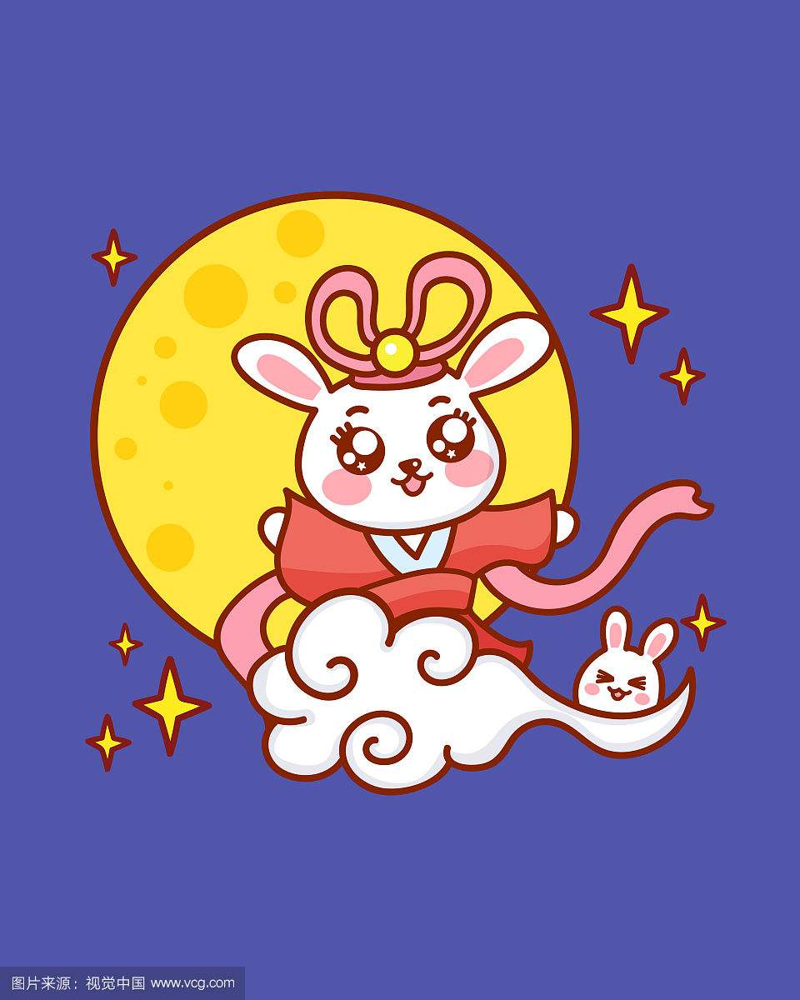

Wu gang non-stopping cut
Legend in the moon palace there was a man called wu gang, is the han dynasty, kosi who follow order immortal, in heaven, but he made a mistake, fairy relegated him to the moon palace, cut down every day in front of the moon palace osmanthus, as a punishment. The tree grows and flourishes more than five hundred feet, and every time it is cut down, the place is immediately closed. Li bai wrote in a poem entitled "the gift of tristavin" : "to be in the middle of the month, pay for the cold."The Story of Tang Xuanzong
Legend has it that Tang xuanzong and shen tianshi and Taoist priest hung all the Mid-Autumn festival, suddenly xuanzong rose up to visit the moon palace, so the celestial division, three people from the beginning of the qingyun, roaming the moon palace. But before the palace was guarded, unable to enter, only overlooks the city of chang 'an. At the same time, the sound of the sound of the fairy, tang xuanzong always knew the rhythm of the rhythm, so silently memorized the heart. This is the song "this song only should have in the sky, the world can have a few times to smell!" In the future, xuanzong recalls the singing of the music of the moon palace, composing and choreographing the music, and creating the famous "clothes and feathers" in history.The Goddess Chang's fly to the moon
 Ancient time appear at the same time, the sky have 10 tan crops die, failure, a hero named houyi, strength, and his sympathy for the people who are suffering, beginning god arch, a stretch shot down over nine SUNS, and ordered the last time a solar ups and downs, the benefit of the people.His wife's name was chang 'e. Houyi was with his wife all day long except for the art. A number of zhishi murong came to the school, and the unskilled peng meng also came in.One day, hou yi went to the kunlun mountains and asked for a package of undead medicine. It is said that taking this medicine can instantly become immortal. However, houyi couldn't leave his wife behind, and gave the undead medicine to chang 'e to cherish.Chang 'e hid the medicine in the dressing table. Three days later, houyi was out hunting, and peng meng, who was haunted by his heart, pretended to be ill, and did not go out. Shortly after houyi left the room, peng meng took the sword into the inner courtyard and forced chang e to hand over the undead medicine. Chang 'e knew that she was not the opponent of peng meng, and she turned to open the treasure chest when she was in danger, and took out the undead medicine and swallowed it. Chang 'e swallowed the medicine, and when he was standing, he flew away from the ground, out of the window and into the sky. Because chang 'e CARES about her husband, she flies to the nearest moon to become a fairy. In the evening, houyi returned to the house, and the ladies complained about what had happened during the day.After yi both surprise and anger, smoke sword to kill evil ACTS, peng meng had already fled, hou yi was so angry, beat grief, looking up at the night sky call for the goddess of the moon, when he found that today's extraordinarily bringing bright moon, and has a swaying shadow resembles fragrance. Houyi thought about his wife, then sent a man to chang 'e's favorite back garden, put on the incense, put on chang 'e's favorite honey to eat fresh fruit, in the moon palace in the moon. When the people heard the news of the goddess of the moon and the goddess of the moon, they set up the incense table in the lower part of the month, and prayed to the good chang e for good luck and peace. From then on, the Mid-Autumn festival worship of the moon in the folk spread